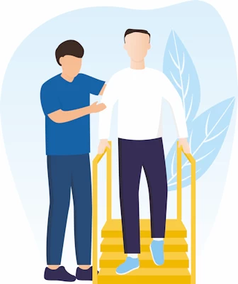

日常生活能力评估与训练
评估煮食、购物、个人护理、家务、金钱管理、电话使用等独立生活能力。
- 建议任务调整和辅助设备
- 识别居家改造或照护协助需要
- 提供安全、实际的独立生活建议
康复解决方案
我们为工伤、机动车事故、NDIS、居家护理、DVA 和慢性病管理相关客户提供评估、计划和康复支持。

评估煮食、购物、个人护理、家务、金钱管理、电话使用等独立生活能力。

为工伤或机动车事故客户制定安全、分阶段、可持续的重返工作计划。

了解客户是否能满足受伤前岗位或目标岗位的实际体能要求。
评估工作环境、岗位要求和恢复障碍，协助客户安全回到办公室或现场工作。
当客户无法回到原岗位时，协助识别现实可行的新工作方向。
为居家护理、慢性病管理、NDIS 和 DVA 客户进行整体功能评估。